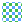
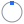
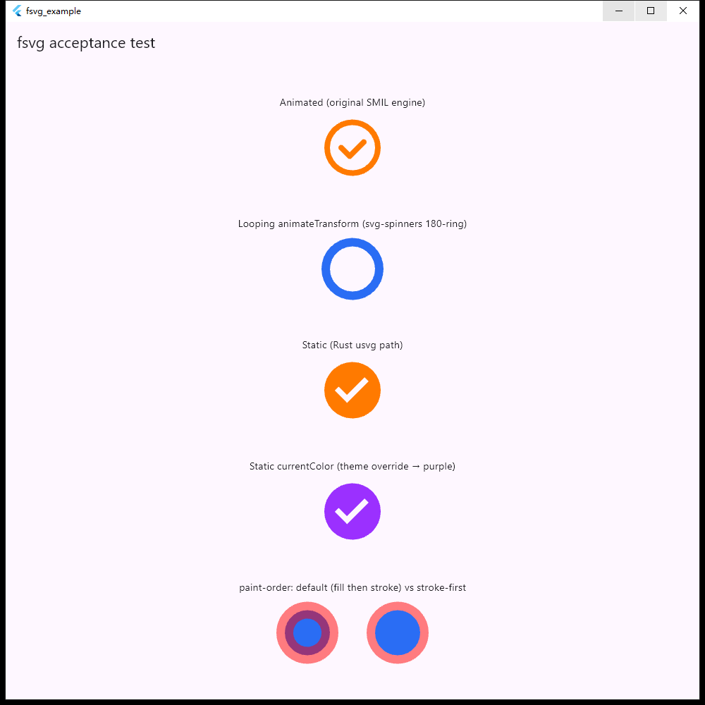

xvg
面向 Flutter 的高性能静态与动画 SVG 渲染。Rust（usvg）负责解析，Flutter 自己的 GPU 管线负责绘制，没有 CPU 光栅化；SMIL 动画由 Dart 侧原创引擎驱动。
High-performance static & animated SVG rendering for Flutter. Rust (usvg) parses, Flutter's own GPU pipeline renders — no CPU rasterizer. SMIL animation runs on an original Dart-side engine.
dart:io 实现，这里没有 web/wasm 构建。此页是静态展示：下方预览由浏览器原生 <img> 渲染，不是 xvg 本身的输出。
Native FFI — Web is not supported. xvg's static path uses Rust FFI and dart:io; there is no web/wasm build. This page is a static showcase: the previews below are rendered by the browser's native <img>, not by xvg itself.
功能导览Feature tour
以包内 README 与 doc/ 为准。Based on the package README and doc/.
静态 SVG（Rust usvg）Static SVG (Rust usvg)
usvg 解析为缓存的 ui.Picture，再交给 Flutter GPU 管线绘制。支持基础形状、<use>、<switch>、<marker>、组 opacity、内嵌 data: 位图。
usvg parses into a cached ui.Picture, drawn by Flutter's GPU pipeline. Shapes, <use>, <switch>, <marker>, group opacity and embedded data: images.
渐变 / clip / mask / filterGradients / clip / mask / filter
线性与径向渐变、clipPath、mask、pattern；filter 目前只有 feGaussianBlur。
Linear & radial gradients, clipPath, mask, pattern; the only filter primitive is feGaussianBlur.
currentColor
源里的 currentColor 通过 XvgTheme(currentColor: ...) 控制，静态与动画路径都生效；colorFilter 可整体重着色。
currentColor in the source is controlled via XvgTheme(currentColor: ...) on both paths; colorFilter recolors the whole image.
SMIL 动画（原创引擎）SMIL animation (original engine)
<animate>、<animateTransform>、<animateMotion>、<set>；一次解析，Dart 侧逐帧采样绘制，每帧无数据跨 FFI。另支持 SVGator 导出的 CSS @keyframes 子集。
<animate>, <animateTransform>, <animateMotion>, <set>; parse once, sample and paint every frame in Dart — no per-frame FFI traffic. A subset of SVGator-exported CSS @keyframes is also supported.
播放控制Playback control
XvgAnimationController：play / pause / stop / reverse / seek、倍速、区间（once / loop / pingPong）、fitDuration；也可由 Flutter Animation<double> 驱动；XvgAnimationQuality 在高并发下自适应跳帧。
XvgAnimationController: play / pause / stop / reverse / seek, rates, ranges (once / loop / pingPong), fitDuration; or drive with a Flutter Animation<double>; XvgAnimationQuality adaptively skips frames under high concurrency.
一个 Widget，五种来源One widget, five sources
Xvg.string / asset / network / file / memory，自动判断走静态还是动画路径；另有 XvgStatic / XvgAnimated，以及可替换 Image.network 的 NetworkXvg 等 ImageProvider。
Xvg.string / asset / network / file / memory auto-select the static or animated path; plus XvgStatic / XvgAnimated and ImageProviders such as NetworkXvg as an Image.network replacement.
预编译原生库Prebuilt native libraries
包内带预编译库（见 prebuilt/），使用方无需 Rust 工具链；pubspec 声明了 Android、iOS、Linux、macOS、Windows 五个 FFI 平台。Android/iOS 等的行为尚未全面实测，见限制。
Prebuilt libraries ship in the package (see prebuilt/) — no Rust toolchain needed for consumers; the pubspec declares five FFI platforms. Android/iOS etc. are not exhaustively tested; see limits.
安全边界Safety limits
静态路径有输入大小（32 MiB）、嵌套（128 层）、引用链、展开预算等限制，超限返回错误；<image href> 只解析内嵌 data: URI。
The static path enforces input size (32 MiB), nesting (128), reference-chain and expansion budgets, returning an error when exceeded; <image href> only decodes embedded data: URIs.
已知限制（如实）Known limits (honest)
- 静态路径不渲染
<text>（为缩小体积的刻意取舍）；动画路径的<text>不受影响。The static path does not render<text>(a deliberate size trade-off); animated-path<text>is unaffected. - filter 仅
feGaussianBlur；mask/blur 不嵌套叠加。OnlyfeGaussianBluris implemented; mask/blur do not nest. - 事件类 SMIL
begin（如 click）不支持；不支持 gzip SVG（svgz）。Event-based SMILbegin(e.g. click) and gzip SVG (svgz) are unsupported. parse_svg同步阻塞调用线程，不可信输入请放后台 isolate。parse_svgis synchronous; parse untrusted input on a background isolate.
实时 SVG 预览Live SVG preview
这些 SVG 取自 / 改写自 example 应用的演示用例，由浏览器原生渲染（含 SMIL 动画），用于展示 xvg 面向的内容类型。xvg 中的实际效果以 example 应用为准；为适配深浅色背景，个别描边色做了调整。 These SVGs come from (or are adapted from) the example app's demo cases and are rendered natively by the browser (including SMIL). They show the kind of content xvg targets; actual xvg output is what the example app shows. A few stroke colors were adjusted for light/dark backgrounds.
静态Static
static-check.svglinear-gradient.svgradial-gradient.svgclip-path.svgmask-static.svgblur-filter.svg
pattern.svgnamed-colors.svggroup-transform.svgpaint-order.svgSMIL 动画SMIL animation
confirm-circle.svgspinner.svg
rotation-marker.svgskewx.svguse-animated.svg
syncbase-relay.svganimate-motion.svgmotion-keypoints.svganimated-mask.svganimated-gradient.svgcurrentColor
同一份 SVG 源，改变外层颜色即换色；xvg 里对应 XvgTheme(currentColor: Colors.purple)。One SVG source, recolored by changing the surrounding color; in xvg this maps to XvgTheme(currentColor: Colors.purple).
性能数据Performance
以下数字全部摘自仓库 xvg/doc/performance-benchmarks.md 的实测记录，未做改动；设备与口径随表注明。
All numbers are quoted unchanged from the measured records in xvg/doc/performance-benchmarks.md; device and methodology are noted per table.
静态：1000 个真实 Mdi 图标，xvg vs flutter_svgStatic: 1000 real Mdi icons, xvg vs flutter_svg
来源：「单编译顺序对比模式 LIB=compare」首次实测。设备：Windows 桌面，profile 模式；同一进程、同一时段配对；8 列 GridView 来回滚动 6 轮。
Source: first LIB=compare run. Device: Windows desktop, profile mode; same process, paired; 8-column GridView scrolled back and forth 6 rounds.
| 指标Metric | xvg | flutter_svg |
|---|---|---|
| build avg / p50 / p90 / p99 / max (ms) | 0.776 / 0.668 / 1.274 / 2.577 / 3.267 | 1.823 / 1.731 / 3.185 / 5.994 / 8.406 |
| raster avg / p50 / p90 / p99 (ms) | 1.769 / 1.660 / 2.354 / 3.398 | 2.134 / 2.029 / 2.934 / 3.769 |
| raster max (ms) | 4.484 | 4.160 |
| 掉帧 >8.3ms / >16.6msFrames >8.3ms / >16.6ms | 0 / 0 (646 帧frames) | 1 / 0 (542 帧frames) |
| 内存峰值 / 稳态 / 空闲后 (MB)Memory peak / steady / idle (MB) | 236.76 / 235.57 / 236.21 | 292.25 / 264.31 / 265.55 |
| xvg 解析耗时xvg parse time | avg 0.039 / p99 0.189 ms | 无公开钩子，未测no public hook, not measured |
raster max 一项 xvg 落后（4.484 vs 4.160 ms），是单样本极值，文档如实记录。该设备测量噪声大，文档指出 ±20~30% 的绝对值波动不足以单独作为回归证据；相对比值比绝对值更可靠。 xvg trails on raster max (4.484 vs 4.160 ms) — a single-sample extreme, recorded honestly in the doc. The source notes ±20–30% absolute noise on this dev machine; ratios are more reliable than absolute values.
动画：SMIL 与 CSSAnimation: SMIL & CSS
| 场景Scenario | 设备Device | 结果Result |
|---|---|---|
| 12 个并发 SMIL 图标，观测 6 秒12 concurrent SMIL icons, 6 s | Windows 桌面 profiledesktop, profile | 361 帧frames, build avg 0.408 ms, raster avg 1.831 ms, >16.6ms: 0 |
| 1000 格动画图标滚动（399 个互异图标平铺；旧数据源）1000-cell animated grid scroll (399 distinct icons tiled; older data source) | Windows 桌面 profiledesktop, profile | real_fps 59.95, >16.6ms: 0 |
| 同上，Iconify 官方数据，4 次中位数Same, official Iconify data, median of 4 runs | Huawei STG-AL00 (Adreno 610), profile | real_fps 49.3, build avg 10.46 ms, raster avg 17.36 ms |
| 少量图标稳态（1/4/16 个循环图标）Few-icon steady state (1/4/16 looping icons) | Huawei STG-AL00 | 稳定在 59.8–59.95 fps；16 个带 mask 图标 raster 约 10.9 msstable at 59.8–59.95 fps; 16 masked icons raster ~10.9 ms |
| SVGator CSS 插画全屏（55 个样本，3 次）SVGator CSS illustrations fullscreen (55 samples, 3 runs) | Huawei STG-AL00 | real_fps 中位数median 59.85, p10 ≥ 59.73 |
来源：同一文档「性能复测」「2026-11-05：动画基准换用 Iconify 官方数据后的真机新基线」等节。两个数据源的数字不能直接比较。 Source: the “re-measurement” and “2026-11-05 real-device baseline” sections of the same doc. Numbers from the two data sources are not directly comparable.
静态：手机上 1000 图标滚动Static: 1000-icon scroll on a phone
设备：Huawei STG-AL00（Adreno 610，Impeller GLES），profile，3 次。该节未与 flutter_svg 对照，文档注明新版 flutter_svg 在安卓上的对比尚待重测。 Device: Huawei STG-AL00 (Adreno 610, Impeller GLES), profile, 3 runs. No flutter_svg comparison in that section; the doc notes the comparison against current flutter_svg on Android is still to be re-measured.
| 指标Metric | xvg |
|---|---|
| build avg | 5.05 ms (4.80–5.11) |
| raster avg | 10.20 ms (10.14–10.22) |
| 超过 16.6ms 的帧Frames over 16.6 ms | 1–2 |
| parse avg (n=1000) | 0.19 ms |
example 应用截图Example app screenshot
Windows 桌面上的 example 验收页：SMIL 动画、旋转加载环、静态 usvg 路径、currentColor 主题覆盖（紫色）、paint-order 对比。窗口标题里的 fsvg 是项目改名前的旧名。
The example acceptance page on Windows desktop: SMIL animation, spinner, static usvg path, currentColor theme override (purple), paint-order comparison. The fsvg in the window title is the project's old name, before the rename.

example 还包含「动画控制」页：播放、seek、倍速、区间、时长适配、事件日志与曲线驱动。The example also has an “Animation control” page: playback, seek, rates, ranges, duration fitting, an event log and a curved driver.
安装与用法Install & usage
flutter pub add xvgimport 'package:flutter/widgets.dart';
import 'package:xvg/xvg.dart';
Future<void> main() async {
WidgetsFlutterBinding.ensureInitialized();
await Xvg.ensureInitialized();
runApp(const MyApp());
}
// 字符串 / String
Xvg.string(svgSource, width: 48, height: 48)
// 资源 / Asset
Xvg.asset('assets/icon.svg', width: 96, height: 96)
// 重着色 / Recolor
Xvg.string(svgSource, colorFilter: ColorFilter.mode(Colors.blue, BlendMode.srcIn))
// currentColor
Xvg.string(svgSource, theme: XvgTheme(currentColor: Colors.blue))// 动画控制 / Animation control
final controller = XvgAnimationController(autoplay: false);
Xvg.string(svgSource, controller: controller, onLoaded: (info) {
controller.play();
});
// 由 Flutter Animation 驱动 / Drive with a Flutter Animation<double>
Xvg.string(svgSource, animation: myAnimationController,
animationSpan: const Duration(seconds: 2))
// 替换 Image.network / Replace Image.network
Image(image: NetworkXvg(url))完整 API 与限制见 pub.dev 与 GitHub README。See pub.dev and the GitHub README for the full API and limits.